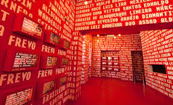

Paço do Frevo: Preservando a Alma Cultural do Recife Antigo
No coração do Recife Antigo, o Paço do Frevo se destaca como um verdadeiro templo da cultura pernambucana. Localizado na Praça do Arsenal, esse espaço cultural é dedicado à preservação e difusão do frevo, uma das manifestações artísticas mais vibrantes e emblemáticas da região. O Paço do Frevo não apenas abriga um acervo impressionante de documentos, fotografias e instrumentos relacionados ao frevo, mas também oferece uma experiência imersiva aos visitantes, proporcionando aulas e apresentações ao vivo desse ritmo contagiante. Ao explorar esse ponto turístico, os visitantes mergulham nas raízes culturais do Recife, compreendendo a importância do frevo não apenas como uma expressão artística, mas como parte intrínseca da identidade pernambucana.
Rua do Bom Jesus: Entre o Passado e o Presente, o Charme da História Viva

A Rua do Bom Jesus, anteriormente conhecida como Rua dos Judeus, é um dos locais mais emblemáticos do Recife Antigo, carregando consigo séculos de história. Suas coloridas fachadas coloniais, calçamento de pedras irregulares e a sinagoga Kahal Zur Israel, reconhecida como a mais antiga das Américas, transportam os visitantes para uma viagem no tempo. No entanto, a Rua do Bom Jesus não é apenas um relicário histórico; ela também abraça a modernidade, abrigando galerias de arte contemporânea, bares e restaurantes badalados. Esse contraste entre o antigo e o novo confere à rua uma atmosfera única, onde cada passo é uma jornada entre as eras, e cada esquina revela a riqueza cultural e arquitetônica do Recife Antigo. Ao explorar a Rua do Bom Jesus, os visitantes testemunham a convivência harmoniosa entre a tradição e a contemporaneidade, tornando-se parte da tapeçaria cultural que define essa parte fascinante da cidade.